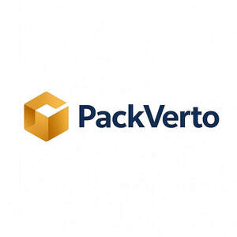

Trade Mark Journal No.2025/049 5 December 2025
UK00004301990 27 November 2025 (16,17)

- Class 16
- Adhesive packaging tapes; Adhesive plastic film for packaging; Adhesive tape cutters being stationery; Tapes (adhesive -) [stationery]; Adhesive tape for stationery purposes; Adhesive labels; Adhesive labels of paper; Paper carton sealing tape; Adhesive plastic film for wrapping; Adhesive stickers; Double-sided adhesive tapes for household use; Adhesive tape dispensers for household or stationery use; Adhesive printed labels; Holders for adhesive tapes; Adhesive tapes for stationery purposes; Dispensers (Adhesive tape -) [office requisites]; Adhesive tape dispensers [office requisites]; Adhesive paper; Sealing tape for stationery use; Adhesive notepads; Automatic adhesive tape dispensers for office use; Double sided adhesive tapes for stationery use; Plastic bags for packing; Freezer bags; Paper bags; Bags of paper; Paper bags and sacks; Paper for bags and sacks; Rubbish bags; Plastic shopping bags; Gift bags; Sandwich bags; Carrier bags; Garbage bags of plastic; Dustbin bags; Plastic bags for wrapping; Plastic bags for packaging; Plastic sandwich bags; Paper shopping bags; Shopping bags of paper or plastic; Paper bags for packaging; Packaging bags of paper; Paper lunch bags; Padded bags of paper; Cardboard; Corrugated cardboard; Paperboard [cardboard]; Cardboard cartons; Paper and cardboard; Corrugated cardboard boxes; Cardboard boxes; Boxes of cardboard; Cardboard packaging; Boxes of cardboard or paper; Boxes of paper or cardboard; Cardboard containers; Stuffing of paper or cardboard; Cardboard tubes; Tubes (Cardboard -); Placards of cardboard; Placards of paper or cardboard; Packaging boxes of cardboard; Cardboard pizza boxes; Cardboard cake boxes; Linerboard for corrugated cardboard; Cardboard hangtags; Packing cardboard; Packaging cartons of cardboard; Cartons of cardboard for packaging; Signboards of paper or cardboard; Coasters of cardboard; Cardboard labels; Hat boxes of cardboard; Labels of paper or cardboard; Airtight packaging of cardboard; Bottle envelopes of cardboard or paper; Bottle envelopes of paper or cardboard; Collapsible cardboard boxes; Boxes made of cardboard; Bottle wrappers of cardboard or paper; Bottle wrappers of paper or cardboard; Industrial paper and cardboard; Containers of cardboard for packaging; Containers for ice made of paper or cardboard; Padding materials of paper or cardboard; Cardboard gift boxes; Display boxes of cardboard; Cardboard packaging boxes in collapsible form; Cardboard packaging boxes in made-up form; Packing cardboard containers; Packing containers of cardboard; Cases made of corrugated cardboard; Advertising signs of paper or cardboard; Figurines made from cardboard; Cardboard badges; Advertisement boards of paper or cardboard; Cardboard mailing tubes; Gift boxes made of cardboard; Drip mats of cardboard; Packaging materials made of cardboard; Packing [cushioning, stuffing] materials of paper or cardboard; Wrapping materials made of cardboard; Advertisement boards of cardboard; Decorations of cardboard for foodstuffs; Printed cardboard invitations; Cardboard shipping containers; Bags and articles for packaging, wrapping and storage of paper, cardboard or plastics; Table mats of cardboard; Cardboard household storage boxes; Plastic envelopes; Dinner mats of cardboard; Printed advertising boards of cardboard; Cardboard picture mounts; Advertising signs of cardboard; Cardboard made from paper mulberry (senkasi); Plastic sheets for packaging; Plastic foil for packaging; Corrugated boxes; Corrugated paper; Party favor boxes of cardboard; Luggage tags of cardboard; Fiberboard boxes; Packaging boxes of paper; Plastic sheets for wrapping and packaging; Corrugated paperboard; Packaging wrappers of plastic; Display banners made of cardboard; Absorbent sheets of paper or plastic for foodstuff packaging; Rolls of plastic film for packaging; Cat box liners in the form of plastic bags; Cardboard backing for binding books; Plastic foil for wrapping; Plastic film for packaging; Plastic sheets for wrapping; Rubbish bags (made of paper or plastic materials); Cartons made from corrugated board; Foils of plastic for packaging; Airtight packaging of paper; Paper envelopes for packaging; Sandwich bags [paper]; Paper gift bags; Bags of paper for foodstuffs; Carrier bags of paper or plastic; Bags made of paper; Refuse bags of paper; Paper party bags; Conical paper bags; Bags (Conical paper -); Garbage bags of paper or of plastics; Bags (Garbage -) of paper or of plastics; Paper for making bags and sacks; Paper for use in the manufacture of tea bags; Bags made of paper for packaging; Food bags of paper or plastics; Bags [envelopes, pouches] of paper or plastics, for packaging; Garbage bags of paper [for household use]; Paper boxes; Boxes of paper; Bags for packaging made of biodegradable paper; Paper wine gift bags; Paper; Paper bags for household use; Paper sacks; Paper mail pouches; Paper containers; Bags of paper for roasting purposes; Packing paper; Paper luggage labels; Towels of paper; Paper towels; Paper pouches for packaging; Glassine paper; Paper napkins; Napkins of paper; Luggage tags of paper; Collapsible boxes of paper; Hat boxes of paper; Paper handkerchiefs; Handkerchiefs of paper; Paper gift boxes; Cloth paper; Paper hangtags; Paper handtowels; Wrapping paper; Paper sheets [stationery]; Paper doilies; Paper stationery; Pads of paper; Paper pads; Tablecloths of paper; Paper tablecloths; Recycled paper; Paper for wrapping books; Boxes made of paper; Tissue paper for making stencil paper; Bin liners of paper; Mulch paper; Kraft paper; Grocery paper; Paper hand-towels; Envelope paper; Paper ribbons; Ribbons (Paper -); Ribbons of paper; Bulk paper; Paper garlands; Toilet paper; Paper made from paper mulberry (tengujosi); Paper bibs; Paper wipes; Napkin paper; Hand towels of paper; Paper hand towels; Plastic film for wrapping; Plastic films for packaging; Waterproofing film (Plastic -) for packaging; Food wrapping plastic film; Plastic films for wrapping; Waterproofing film (Plastic -) for wrapping; Plastic bubble film for wrapping; Plastic film roll stock for packaging; Cling film plastics for packaging; Plastic films for wrapping and packaging; Adhesive plastic film used for mounting images; Plastic film roll stock for packaging pharmaceuticals; Plastic film roll stock for packaging food; Plastic cling film, extensible, for palletization; Film (Plastic cling -) extensible, for palletization; Plastic film roll stock for packaging electronic devices; Food wrapping plastic film for household use; Plastic material for packaging; Cling film; Plastic wrap; Bags for packaging made of biodegradable plastic; Plastic materials for packaging; Foils of plastic for wrapping; Plastic bags for packaging ice; Plastic coated copying paper.
- Class 17
- Adhesive masking tape; Packaging tapes (Adhesive -), other than for household or stationery use; Adhesive tapes for industrial use; Masking tape; Adhesive packaging tapes, other than stationery and not for medical or household purposes; Paper adhesive tape, other than for household, medical or stationery purposes; Adhesive tapes [other than for household, medical or stationery use]; Plastic film other than for wrapping; Plastic film, other than for wrapping; Plastic film for use in laminating paper.
ONE STRETCH LTD